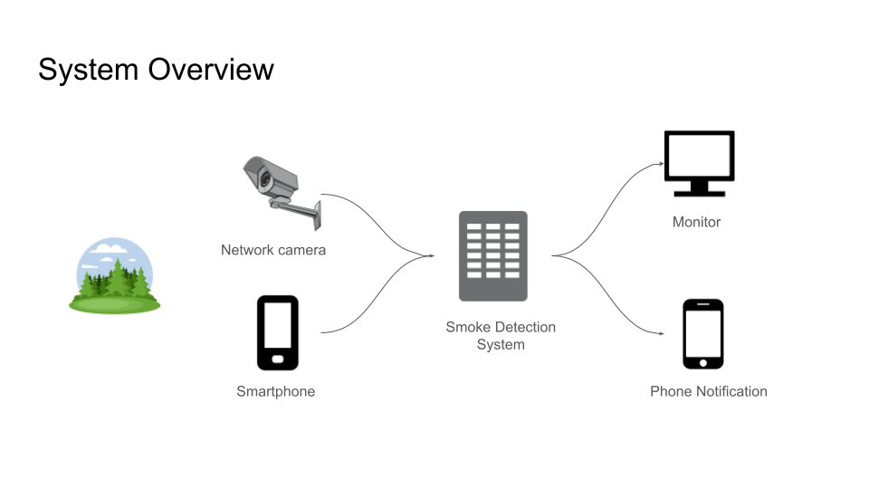

Wildfires are one of the most destructive natural disasters, causing extensive damage to ecosystems, communities, and economies around the globe. Every year, wildfires consume millions of acres of land, devastate homes and habitats, and result in the loss of human and animal lives. The consequences of wildfires extend beyond immediate destruction, leading to long-term environmental and health issues, including air and water pollution, soil erosion, and increased carbon emissions.
The frequency and intensity of wildfires have been escalating due to climate change, making it more important than ever to implement effective detection and management strategies. Our innovative solution addresses this urgent need, offering a proactive approach to wildfire detection and response.
At Dorgie, we've developed a cutting-edge wildfire detection system that leverages the latest in vision technology and artificial intelligence to identify potential wildfires faster and more accurately than ever before. Our system is designed to provide early warnings, enabling quicker response times and potentially saving lives and preserving natural resources.
Wildfires are a growing threat, but together, we can make a difference. Dorgie is committed to innovation and excellence in wildfire detection, offering a smart, effective solution to a global challenge. Contact us to learn more about our system and how you can be part of the solution in protecting our planet from the ravages of wildfires.